Plot global gradients of main principal components
Contents
Plot global gradients of main principal components#
!pwd
/net/home/swolf/Func_Neo_Phytes/notebooks/final_notebooks
# set working directory
import os
os.chdir("/net/home/swolf/Func_Neo_Phytes/")
Load summary stats at hexagon level#
import pandas as pd
import matplotlib.pyplot as plt
import h3pandas
#summary_data = pd.read_csv("/net/scratch/swolf/GBIF/gbif_res3_try6_CS_wcvp_summary_stats_inkl_pca_mean_log10.csv")## PREPRINT VERSION
summary_data = pd.read_csv("/net/scratch/swolf/GBIF/gbif_res3_try6_CS_wcvp_summary_stats_inkl_pca_mean_log10_notrim_misstree.csv")
summary_data.head()
| h3_res3 | PC1_all | PC1_native | PC2_all | PC2_native | PC3_all | PC3_native | PC4_all | PC4_native | PC5_all | ... | X.X47..mean_native | X.X47..median_all | X.X47..median_native | X.X47..percent_change_mean | X.X47..percent_change_median | X.X47..n_na_all | X.X47..perc_na_all | X.X47..n_na_native | X.X47..perc_na_native | resolution | |
|---|---|---|---|---|---|---|---|---|---|---|---|---|---|---|---|---|---|---|---|---|---|
| 0 | 83831efffffffff | 4.791148 | 3.776629 | 0.972105 | 1.108890 | -0.543161 | -0.344312 | -0.421365 | 1.020680 | 0.577483 | ... | 0.322 | 0.352 | 0.354 | 0.00 | -0.56 | 37 | 24.67 | 16 | 19.05 | h3_res3 |
| 1 | 838218fffffffff | 3.901431 | 5.058331 | 1.130704 | 0.513898 | -0.246278 | 0.057208 | -0.472530 | -0.547894 | 0.295538 | ... | 0.293 | 0.276 | 0.285 | -6.83 | -3.16 | 10 | 26.32 | 10 | 34.48 | h3_res3 |
| 2 | 838233fffffffff | 5.296893 | 7.964621 | 0.734479 | 0.175995 | -0.373005 | 0.697346 | -1.405497 | -1.565001 | 1.315280 | ... | 0.290 | 0.324 | 0.280 | 3.79 | 15.71 | 8 | 26.67 | 7 | 43.75 | h3_res3 |
| 3 | 838230fffffffff | 5.160745 | 6.437678 | 1.152159 | 0.761990 | -0.937332 | -0.018926 | 0.092611 | 0.814618 | 0.881475 | ... | 0.308 | 0.305 | 0.315 | -1.30 | -3.17 | 11 | 31.43 | 8 | 40.00 | h3_res3 |
| 4 | 83be4dfffffffff | 0.601728 | 0.684375 | -7.733539 | -7.925340 | 2.775503 | 2.866219 | 0.476081 | 0.466763 | -0.687836 | ... | 0.496 | 0.497 | 0.514 | -1.21 | -3.31 | 7924 | 25.99 | 7837 | 26.22 | h3_res3 |
5 rows × 392 columns
Calculate percentage naturalized#
# Add a new column 'ratio' as the fraction of 'column1' and 'column2'
summary_data['perc_naturalized'] = (summary_data['count_all'] - summary_data['count_native']) / summary_data['count_all']*100
summary_data['perc_naturalized_sp'] = (summary_data['count_sp_all'] - summary_data['count_sp_native']) / summary_data['count_sp_all']*100
summary_data.head()
| h3_res3 | PC1_all | PC1_native | PC2_all | PC2_native | PC3_all | PC3_native | PC4_all | PC4_native | PC5_all | ... | X.X47..median_native | X.X47..percent_change_mean | X.X47..percent_change_median | X.X47..n_na_all | X.X47..perc_na_all | X.X47..n_na_native | X.X47..perc_na_native | resolution | perc_naturalized | perc_naturalized_sp | |
|---|---|---|---|---|---|---|---|---|---|---|---|---|---|---|---|---|---|---|---|---|---|
| 0 | 83831efffffffff | 4.791148 | 3.776629 | 0.972105 | 1.108890 | -0.543161 | -0.344312 | -0.421365 | 1.020680 | 0.577483 | ... | 0.354 | 0.00 | -0.56 | 37 | 24.67 | 16 | 19.05 | h3_res3 | 44.000000 | 46.575342 |
| 1 | 838218fffffffff | 3.901431 | 5.058331 | 1.130704 | 0.513898 | -0.246278 | 0.057208 | -0.472530 | -0.547894 | 0.295538 | ... | 0.285 | -6.83 | -3.16 | 10 | 26.32 | 10 | 34.48 | h3_res3 | 23.684211 | 17.857143 |
| 2 | 838233fffffffff | 5.296893 | 7.964621 | 0.734479 | 0.175995 | -0.373005 | 0.697346 | -1.405497 | -1.565001 | 1.315280 | ... | 0.280 | 3.79 | 15.71 | 8 | 26.67 | 7 | 43.75 | h3_res3 | 46.666667 | 42.857143 |
| 3 | 838230fffffffff | 5.160745 | 6.437678 | 1.152159 | 0.761990 | -0.937332 | -0.018926 | 0.092611 | 0.814618 | 0.881475 | ... | 0.315 | -1.30 | -3.17 | 11 | 31.43 | 8 | 40.00 | h3_res3 | 42.857143 | 46.428571 |
| 4 | 83be4dfffffffff | 0.601728 | 0.684375 | -7.733539 | -7.925340 | 2.775503 | 2.866219 | 0.476081 | 0.466763 | -0.687836 | ... | 0.514 | -1.21 | -3.31 | 7924 | 25.99 | 7837 | 26.22 | h3_res3 | 1.971073 | 26.062847 |
5 rows × 394 columns
# add column with count_all and count_native in ln scale
import numpy as np
summary_data['log_count_all'] = np.log10(summary_data['count_all'])
summary_data['log_count_native'] = np.log10(summary_data['count_native'])
summary_data['log_count_all_sp'] = np.log10(summary_data['count_sp_all'])
summary_data['log_count_native_sp'] = np.log10(summary_data['count_sp_native'])
summary_data['count_non_native'] = summary_data['count_sp_all'] - summary_data['count_sp_native']
summary_data['log_count_non_native'] = np.log10(summary_data['count_non_native'])
/net/home/swolf/.conda/envs/traitmaps/lib/python3.8/site-packages/pandas/core/arraylike.py:402: RuntimeWarning: divide by zero encountered in log10
result = getattr(ufunc, method)(*inputs, **kwargs)
# calculate differences between native and all for PC1 and PC2
summary_data['PC1_diff'] = summary_data['PC1_all'] - summary_data['PC1_native']
summary_data['PC2_diff'] = summary_data['PC2_all'] - summary_data['PC2_native']
summary_data['PC3_diff'] = summary_data['PC3_all'] - summary_data['PC3_native']
summary_data['PC4_diff'] = summary_data['PC4_all'] - summary_data['PC4_native']
summary_data['PC5_diff'] = summary_data['PC5_all'] - summary_data['PC5_native']
Map hexagons#
Create GeoDataFrame and Clean Geometries#
This code block converts H3 hexagon indices to polygons, wraps longitudes to the range [-180, 180], and creates a GeoDataFrame. Invalid geometries and polygons spanning more than 180° longitude are removed to ensure clean and accurate spatial data for further analysis.
final_df = summary_data.copy()
import geopandas as gpd
import h3
from shapely.geometry import Polygon
from shapely.ops import transform
import matplotlib.pyplot as plt
import cartopy.crs as ccrs
import cartopy.feature as cfeature
# Function to convert H3 cell to polygon
def h3_to_polygon(h3_index):
boundary = h3.h3_to_geo_boundary(h3_index, geo_json=True)
return Polygon(boundary)
# Function to wrap longitudes to [-180, 180]
def wrap_geometry(geom):
def wrap_coords(x, y):
x_wrapped = ((x + 180) % 360) - 180
return x_wrapped, y
return transform(lambda x, y: wrap_coords(x, y), geom)
# Build geometry column
final_df["geometry"] = final_df["h3_res3"].apply(lambda x: wrap_geometry(h3_to_polygon(x)))
# Create GeoDataFrame
gdf = gpd.GeoDataFrame(final_df, geometry="geometry", crs="EPSG:4326")
# Fix column names
gdf.columns = gdf.columns.str.replace('.', '_')
# 💥 Remove invalid geometries and those spanning too much longitude
gdf = gdf[gdf.geometry.is_valid] # remove invalid
gdf = gdf[gdf.bounds.maxx - gdf.bounds.minx < 180] # remove polygons >180° wide
/tmp/ipykernel_95038/3219989185.py:28: FutureWarning: The default value of regex will change from True to False in a future version. In addition, single character regular expressions will *not* be treated as literal strings when regex=True.
gdf.columns = gdf.columns.str.replace('.', '_')
Plot world map#
import matplotlib.pyplot as plt
import matplotlib.colors as mcolors
import numpy as np
# Define your custom colors
colors = [ "#2ed5c9", "#FFDAB9", "#FF6F61"]
# Create the colormap
native_non_cmap = mcolors.LinearSegmentedColormap.from_list("custom_gradient", colors)
# OPTIONAL: Visualize it with a gradient bar
gradient = np.linspace(0, 1, 256).reshape(1, -1)
plt.figure(figsize=(6, 1))
plt.imshow(gradient, aspect='auto', cmap=native_non_cmap)
plt.axis("off")
plt.title("Custom Gradient: Coral → Peach → Soft Turquoise", fontsize=10)
plt.show()

import matplotlib.pyplot as plt
import matplotlib.colors as mcolors
# Define your colors
low_color = "#2F86AC" # like native_color
mid_color = "white"
high_color = "#b02f2c" # like all_color
# Create a custom diverging colormap
div_cmap = mcolors.LinearSegmentedColormap.from_list(
"custom_diverging",
[low_color, mid_color, high_color]
)
def plot_maps(gdf, pattern, output_suffix="meanbased_trim01_GBIF_wcvp_CS_log10_notrim_LCweighted"):
import os
import numpy as np
import matplotlib.pyplot as plt
import cartopy.crs as ccrs
import cartopy.feature as cfeature
os.makedirs("Results/Figures", exist_ok=True)
# Loop over columns matching the pattern
for column in [col for col in gdf.columns if col.startswith(pattern)]:
# -------------------------
# Set colour scale
# -------------------------
if "percent_change" in column:
vmin, vmax = -80, 80
cmap = div_cmap
elif "rank_biserial_r" in column:
vmin, vmax = -0.7, 0.7
cmap = div_cmap
elif "perc_naturalized" in column:
vmin, vmax = 0, 100
cmap = "YlGnBu"
elif "conifer_percentage" in column:
vmin, vmax = 0, 20
cmap = "YlGnBu"
elif "annual_percentage" in column:
vmin, vmax = 0, 40
cmap = "YlGnBu_r"
elif "PC1_diff" in column:
vmin = np.nanpercentile(gdf[column], 5)
vmax = np.nanpercentile(gdf[column], 95)
limit = max(abs(vmin), abs(vmax))
vmin, vmax = -limit, limit
cmap = div_cmap
elif "PC2_diff" in column:
vmin = np.nanpercentile(gdf["PC1_diff"], 5)
vmax = np.nanpercentile(gdf["PC1_diff"], 95)
limit = max(abs(vmin), abs(vmax))
vmin, vmax = -limit, limit
cmap = div_cmap
elif "PC3_diff" in column:
vmin = np.nanpercentile(gdf["PC1_diff"], 5)
vmax = np.nanpercentile(gdf["PC1_diff"], 95)
limit = max(abs(vmin), abs(vmax))
vmin, vmax = -limit, limit
cmap = div_cmap
elif "PC4_diff" in column:
vmin = np.nanpercentile(gdf["PC1_diff"], 5)
vmax = np.nanpercentile(gdf["PC1_diff"], 95)
limit = max(abs(vmin), abs(vmax))
vmin, vmax = -limit, limit
cmap = div_cmap
elif "PC5_diff" in column:
vmin = np.nanpercentile(gdf["PC1_diff"], 5)
vmax = np.nanpercentile(gdf["PC1_diff"], 95)
limit = max(abs(vmin), abs(vmax))
vmin, vmax = -limit, limit
cmap = div_cmap
elif any(x in column for x in ["urban_diff", "nat_diff", "crop_diff"]):
vmin, vmax = -1, 1
cmap = div_cmap
else:
vmin = np.nanpercentile(gdf[column], 1)
vmax = np.nanpercentile(gdf[column], 99)
cmap = "YlGnBu"
# -------------------------
# Create map
# -------------------------
fig, ax = plt.subplots(
figsize=(12, 10),
subplot_kw={"projection": ccrs.EqualEarth()}
)
ax.set_global()
ax.add_feature(
cfeature.LAND,
facecolor="#afafafff",
edgecolor="none"
)
ax.add_feature(
cfeature.OCEAN,
facecolor="#dad8eaff",
edgecolor="none"
)
ax._autoscaleXon = True
ax._autoscaleYon = True
# Plot hexagons
gdf.plot(
column=column,
cmap=cmap,
vmin=vmin,
vmax=vmax,
legend=True,
ax=ax,
transform=ccrs.PlateCarree(),
linewidth=0.001,
legend_kwds={"shrink": 0.45}
)
ax.set_title(
f"{column} per hexagon",
fontsize=12
)
for spine in ax.spines.values():
spine.set_edgecolor("#dad8eaff")
spine.set_linewidth(0.7)
plt.tight_layout()
# -------------------------
# Save
# -------------------------
output_path = (
f"Results/Figures/"
f"{column}_{output_suffix}.png"
)
plt.savefig(
output_path,
dpi=500,
bbox_inches="tight"
)
print(output_path)
plt.show()
plt.close()
# Plot PC axes 1-5 for all and native
for pc in range(1, 6):
for group in ("all", "native"):
plot_maps(gdf, f"PC{pc}_{group}")
/net/home/swolf/.conda/envs/traitmaps/lib/python3.8/site-packages/cartopy/crs.py:245: ShapelyDeprecationWarning: __len__ for multi-part geometries is deprecated and will be removed in Shapely 2.0. Check the length of the `geoms` property instead to get the number of parts of a multi-part geometry.
if len(multi_line_string) > 1:
/net/home/swolf/.conda/envs/traitmaps/lib/python3.8/site-packages/cartopy/crs.py:297: ShapelyDeprecationWarning: Iteration over multi-part geometries is deprecated and will be removed in Shapely 2.0. Use the `geoms` property to access the constituent parts of a multi-part geometry.
for line in multi_line_string:
/net/home/swolf/.conda/envs/traitmaps/lib/python3.8/site-packages/cartopy/crs.py:364: ShapelyDeprecationWarning: __len__ for multi-part geometries is deprecated and will be removed in Shapely 2.0. Check the length of the `geoms` property instead to get the number of parts of a multi-part geometry.
if len(p_mline) > 0:
/net/home/swolf/.conda/envs/traitmaps/lib/python3.8/site-packages/cartopy/crs.py:256: ShapelyDeprecationWarning: __len__ for multi-part geometries is deprecated and will be removed in Shapely 2.0. Check the length of the `geoms` property instead to get the number of parts of a multi-part geometry.
line_strings = list(multi_line_string)
/net/home/swolf/.conda/envs/traitmaps/lib/python3.8/site-packages/cartopy/crs.py:256: ShapelyDeprecationWarning: Iteration over multi-part geometries is deprecated and will be removed in Shapely 2.0. Use the `geoms` property to access the constituent parts of a multi-part geometry.
line_strings = list(multi_line_string)
/net/home/swolf/.conda/envs/traitmaps/lib/python3.8/site-packages/cartopy/crs.py:402: ShapelyDeprecationWarning: Iteration over multi-part geometries is deprecated and will be removed in Shapely 2.0. Use the `geoms` property to access the constituent parts of a multi-part geometry.
line_strings.extend(multi_line_string)
/net/home/swolf/.conda/envs/traitmaps/lib/python3.8/site-packages/cartopy/crs.py:402: ShapelyDeprecationWarning: __len__ for multi-part geometries is deprecated and will be removed in Shapely 2.0. Check the length of the `geoms` property instead to get the number of parts of a multi-part geometry.
line_strings.extend(multi_line_string)
Results/Figures/PC1_all_meanbased_trim01_GBIF_wcvp_CS_log10_notrim_LCweighted.png
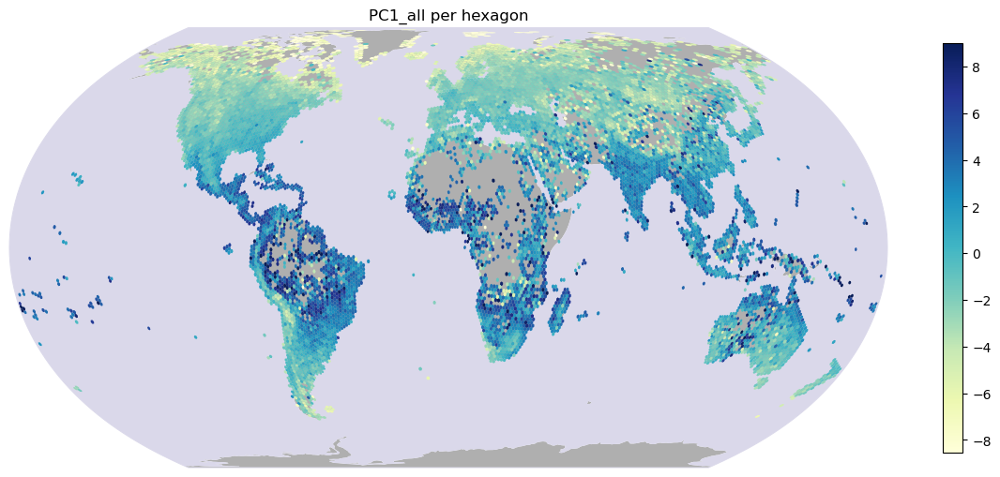
/net/home/swolf/.conda/envs/traitmaps/lib/python3.8/site-packages/cartopy/crs.py:245: ShapelyDeprecationWarning: __len__ for multi-part geometries is deprecated and will be removed in Shapely 2.0. Check the length of the `geoms` property instead to get the number of parts of a multi-part geometry.
if len(multi_line_string) > 1:
/net/home/swolf/.conda/envs/traitmaps/lib/python3.8/site-packages/cartopy/crs.py:297: ShapelyDeprecationWarning: Iteration over multi-part geometries is deprecated and will be removed in Shapely 2.0. Use the `geoms` property to access the constituent parts of a multi-part geometry.
for line in multi_line_string:
/net/home/swolf/.conda/envs/traitmaps/lib/python3.8/site-packages/cartopy/crs.py:364: ShapelyDeprecationWarning: __len__ for multi-part geometries is deprecated and will be removed in Shapely 2.0. Check the length of the `geoms` property instead to get the number of parts of a multi-part geometry.
if len(p_mline) > 0:
Results/Figures/PC1_native_meanbased_trim01_GBIF_wcvp_CS_log10_notrim_LCweighted.png
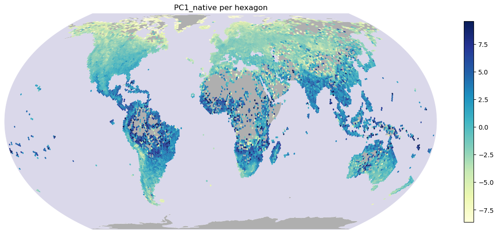
/net/home/swolf/.conda/envs/traitmaps/lib/python3.8/site-packages/cartopy/crs.py:245: ShapelyDeprecationWarning: __len__ for multi-part geometries is deprecated and will be removed in Shapely 2.0. Check the length of the `geoms` property instead to get the number of parts of a multi-part geometry.
if len(multi_line_string) > 1:
/net/home/swolf/.conda/envs/traitmaps/lib/python3.8/site-packages/cartopy/crs.py:297: ShapelyDeprecationWarning: Iteration over multi-part geometries is deprecated and will be removed in Shapely 2.0. Use the `geoms` property to access the constituent parts of a multi-part geometry.
for line in multi_line_string:
/net/home/swolf/.conda/envs/traitmaps/lib/python3.8/site-packages/cartopy/crs.py:364: ShapelyDeprecationWarning: __len__ for multi-part geometries is deprecated and will be removed in Shapely 2.0. Check the length of the `geoms` property instead to get the number of parts of a multi-part geometry.
if len(p_mline) > 0:
Results/Figures/PC2_all_meanbased_trim01_GBIF_wcvp_CS_log10_notrim_LCweighted.png
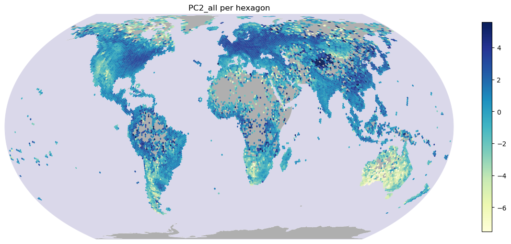
/net/home/swolf/.conda/envs/traitmaps/lib/python3.8/site-packages/cartopy/crs.py:245: ShapelyDeprecationWarning: __len__ for multi-part geometries is deprecated and will be removed in Shapely 2.0. Check the length of the `geoms` property instead to get the number of parts of a multi-part geometry.
if len(multi_line_string) > 1:
/net/home/swolf/.conda/envs/traitmaps/lib/python3.8/site-packages/cartopy/crs.py:297: ShapelyDeprecationWarning: Iteration over multi-part geometries is deprecated and will be removed in Shapely 2.0. Use the `geoms` property to access the constituent parts of a multi-part geometry.
for line in multi_line_string:
/net/home/swolf/.conda/envs/traitmaps/lib/python3.8/site-packages/cartopy/crs.py:364: ShapelyDeprecationWarning: __len__ for multi-part geometries is deprecated and will be removed in Shapely 2.0. Check the length of the `geoms` property instead to get the number of parts of a multi-part geometry.
if len(p_mline) > 0:
Results/Figures/PC2_native_meanbased_trim01_GBIF_wcvp_CS_log10_notrim_LCweighted.png
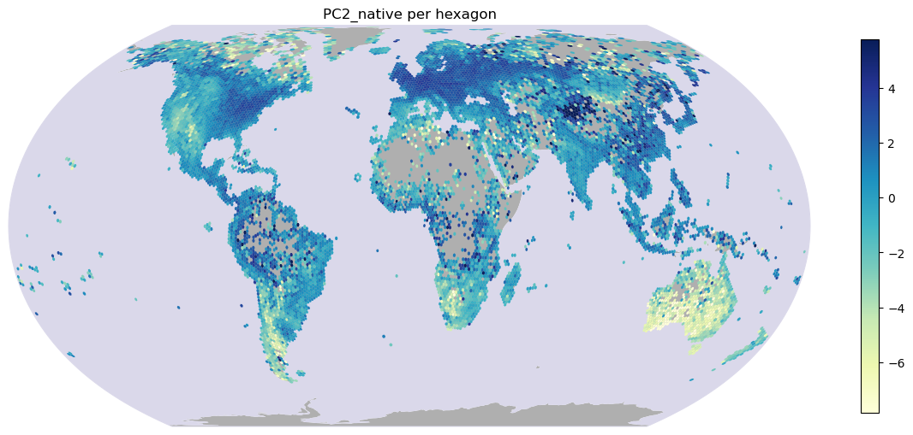
/net/home/swolf/.conda/envs/traitmaps/lib/python3.8/site-packages/cartopy/crs.py:245: ShapelyDeprecationWarning: __len__ for multi-part geometries is deprecated and will be removed in Shapely 2.0. Check the length of the `geoms` property instead to get the number of parts of a multi-part geometry.
if len(multi_line_string) > 1:
/net/home/swolf/.conda/envs/traitmaps/lib/python3.8/site-packages/cartopy/crs.py:297: ShapelyDeprecationWarning: Iteration over multi-part geometries is deprecated and will be removed in Shapely 2.0. Use the `geoms` property to access the constituent parts of a multi-part geometry.
for line in multi_line_string:
/net/home/swolf/.conda/envs/traitmaps/lib/python3.8/site-packages/cartopy/crs.py:364: ShapelyDeprecationWarning: __len__ for multi-part geometries is deprecated and will be removed in Shapely 2.0. Check the length of the `geoms` property instead to get the number of parts of a multi-part geometry.
if len(p_mline) > 0:
Results/Figures/PC3_all_meanbased_trim01_GBIF_wcvp_CS_log10_notrim_LCweighted.png
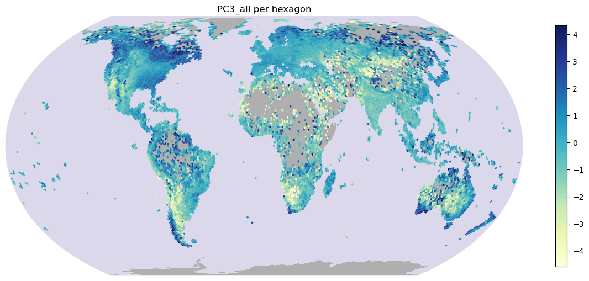
/net/home/swolf/.conda/envs/traitmaps/lib/python3.8/site-packages/cartopy/crs.py:245: ShapelyDeprecationWarning: __len__ for multi-part geometries is deprecated and will be removed in Shapely 2.0. Check the length of the `geoms` property instead to get the number of parts of a multi-part geometry.
if len(multi_line_string) > 1:
/net/home/swolf/.conda/envs/traitmaps/lib/python3.8/site-packages/cartopy/crs.py:297: ShapelyDeprecationWarning: Iteration over multi-part geometries is deprecated and will be removed in Shapely 2.0. Use the `geoms` property to access the constituent parts of a multi-part geometry.
for line in multi_line_string:
/net/home/swolf/.conda/envs/traitmaps/lib/python3.8/site-packages/cartopy/crs.py:364: ShapelyDeprecationWarning: __len__ for multi-part geometries is deprecated and will be removed in Shapely 2.0. Check the length of the `geoms` property instead to get the number of parts of a multi-part geometry.
if len(p_mline) > 0:
Results/Figures/PC3_native_meanbased_trim01_GBIF_wcvp_CS_log10_notrim_LCweighted.png
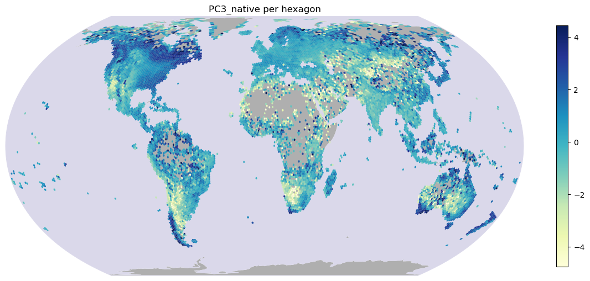
/net/home/swolf/.conda/envs/traitmaps/lib/python3.8/site-packages/cartopy/crs.py:245: ShapelyDeprecationWarning: __len__ for multi-part geometries is deprecated and will be removed in Shapely 2.0. Check the length of the `geoms` property instead to get the number of parts of a multi-part geometry.
if len(multi_line_string) > 1:
/net/home/swolf/.conda/envs/traitmaps/lib/python3.8/site-packages/cartopy/crs.py:297: ShapelyDeprecationWarning: Iteration over multi-part geometries is deprecated and will be removed in Shapely 2.0. Use the `geoms` property to access the constituent parts of a multi-part geometry.
for line in multi_line_string:
/net/home/swolf/.conda/envs/traitmaps/lib/python3.8/site-packages/cartopy/crs.py:364: ShapelyDeprecationWarning: __len__ for multi-part geometries is deprecated and will be removed in Shapely 2.0. Check the length of the `geoms` property instead to get the number of parts of a multi-part geometry.
if len(p_mline) > 0:
Results/Figures/PC4_all_meanbased_trim01_GBIF_wcvp_CS_log10_notrim_LCweighted.png
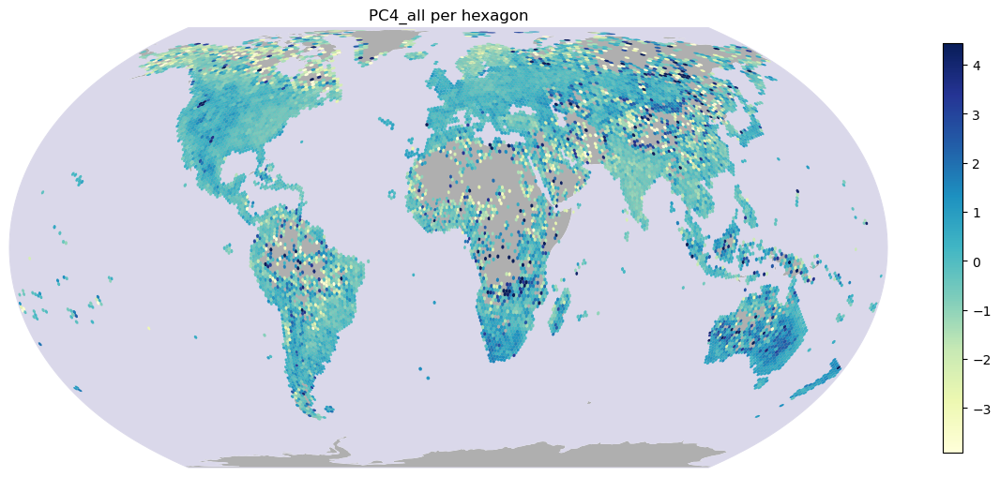
/net/home/swolf/.conda/envs/traitmaps/lib/python3.8/site-packages/cartopy/crs.py:245: ShapelyDeprecationWarning: __len__ for multi-part geometries is deprecated and will be removed in Shapely 2.0. Check the length of the `geoms` property instead to get the number of parts of a multi-part geometry.
if len(multi_line_string) > 1:
/net/home/swolf/.conda/envs/traitmaps/lib/python3.8/site-packages/cartopy/crs.py:297: ShapelyDeprecationWarning: Iteration over multi-part geometries is deprecated and will be removed in Shapely 2.0. Use the `geoms` property to access the constituent parts of a multi-part geometry.
for line in multi_line_string:
/net/home/swolf/.conda/envs/traitmaps/lib/python3.8/site-packages/cartopy/crs.py:364: ShapelyDeprecationWarning: __len__ for multi-part geometries is deprecated and will be removed in Shapely 2.0. Check the length of the `geoms` property instead to get the number of parts of a multi-part geometry.
if len(p_mline) > 0:
Results/Figures/PC4_native_meanbased_trim01_GBIF_wcvp_CS_log10_notrim_LCweighted.png
/net/home/swolf/.conda/envs/traitmaps/lib/python3.8/site-packages/cartopy/crs.py:245: ShapelyDeprecationWarning: __len__ for multi-part geometries is deprecated and will be removed in Shapely 2.0. Check the length of the `geoms` property instead to get the number of parts of a multi-part geometry.
if len(multi_line_string) > 1:
/net/home/swolf/.conda/envs/traitmaps/lib/python3.8/site-packages/cartopy/crs.py:297: ShapelyDeprecationWarning: Iteration over multi-part geometries is deprecated and will be removed in Shapely 2.0. Use the `geoms` property to access the constituent parts of a multi-part geometry.
for line in multi_line_string:
/net/home/swolf/.conda/envs/traitmaps/lib/python3.8/site-packages/cartopy/crs.py:364: ShapelyDeprecationWarning: __len__ for multi-part geometries is deprecated and will be removed in Shapely 2.0. Check the length of the `geoms` property instead to get the number of parts of a multi-part geometry.
if len(p_mline) > 0:
Results/Figures/PC5_all_meanbased_trim01_GBIF_wcvp_CS_log10_notrim_LCweighted.png
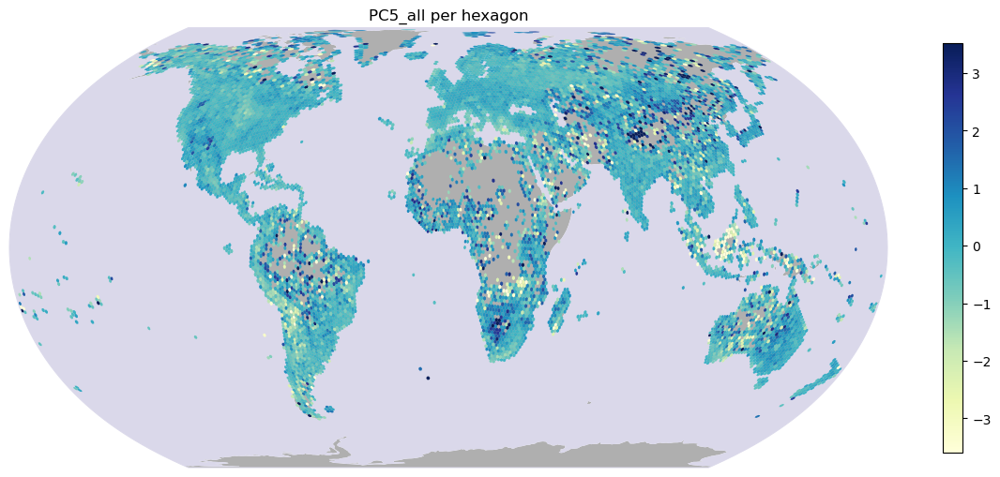
/net/home/swolf/.conda/envs/traitmaps/lib/python3.8/site-packages/cartopy/crs.py:245: ShapelyDeprecationWarning: __len__ for multi-part geometries is deprecated and will be removed in Shapely 2.0. Check the length of the `geoms` property instead to get the number of parts of a multi-part geometry.
if len(multi_line_string) > 1:
/net/home/swolf/.conda/envs/traitmaps/lib/python3.8/site-packages/cartopy/crs.py:297: ShapelyDeprecationWarning: Iteration over multi-part geometries is deprecated and will be removed in Shapely 2.0. Use the `geoms` property to access the constituent parts of a multi-part geometry.
for line in multi_line_string:
/net/home/swolf/.conda/envs/traitmaps/lib/python3.8/site-packages/cartopy/crs.py:364: ShapelyDeprecationWarning: __len__ for multi-part geometries is deprecated and will be removed in Shapely 2.0. Check the length of the `geoms` property instead to get the number of parts of a multi-part geometry.
if len(p_mline) > 0:
Results/Figures/PC5_native_meanbased_trim01_GBIF_wcvp_CS_log10_notrim_LCweighted.png
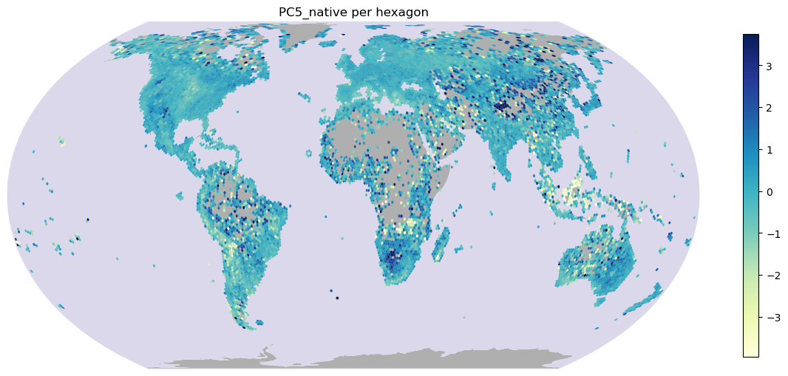
# Plot differeces in PC space for PC1, PC2, and PC3
plot_maps(gdf, "PC1_diff")
plot_maps(gdf, "PC2_diff")
plot_maps(gdf, "PC3_diff")
plot_maps(gdf, "PC4_diff")
plot_maps(gdf, "PC5_diff")
/net/home/swolf/.conda/envs/traitmaps/lib/python3.8/site-packages/cartopy/crs.py:245: ShapelyDeprecationWarning: __len__ for multi-part geometries is deprecated and will be removed in Shapely 2.0. Check the length of the `geoms` property instead to get the number of parts of a multi-part geometry.
if len(multi_line_string) > 1:
/net/home/swolf/.conda/envs/traitmaps/lib/python3.8/site-packages/cartopy/crs.py:297: ShapelyDeprecationWarning: Iteration over multi-part geometries is deprecated and will be removed in Shapely 2.0. Use the `geoms` property to access the constituent parts of a multi-part geometry.
for line in multi_line_string:
/net/home/swolf/.conda/envs/traitmaps/lib/python3.8/site-packages/cartopy/crs.py:364: ShapelyDeprecationWarning: __len__ for multi-part geometries is deprecated and will be removed in Shapely 2.0. Check the length of the `geoms` property instead to get the number of parts of a multi-part geometry.
if len(p_mline) > 0:
Results/Figures/PC1_diff_meanbased_trim01_GBIF_wcvp_CS_log10_notrim_LCweighted.png
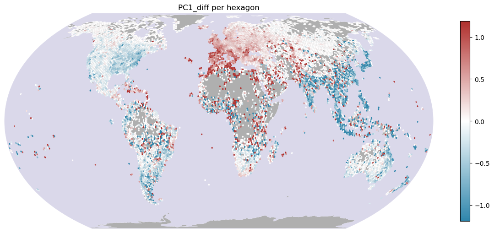
/net/home/swolf/.conda/envs/traitmaps/lib/python3.8/site-packages/cartopy/crs.py:245: ShapelyDeprecationWarning: __len__ for multi-part geometries is deprecated and will be removed in Shapely 2.0. Check the length of the `geoms` property instead to get the number of parts of a multi-part geometry.
if len(multi_line_string) > 1:
/net/home/swolf/.conda/envs/traitmaps/lib/python3.8/site-packages/cartopy/crs.py:297: ShapelyDeprecationWarning: Iteration over multi-part geometries is deprecated and will be removed in Shapely 2.0. Use the `geoms` property to access the constituent parts of a multi-part geometry.
for line in multi_line_string:
/net/home/swolf/.conda/envs/traitmaps/lib/python3.8/site-packages/cartopy/crs.py:364: ShapelyDeprecationWarning: __len__ for multi-part geometries is deprecated and will be removed in Shapely 2.0. Check the length of the `geoms` property instead to get the number of parts of a multi-part geometry.
if len(p_mline) > 0:
Results/Figures/PC2_diff_meanbased_trim01_GBIF_wcvp_CS_log10_notrim_LCweighted.png
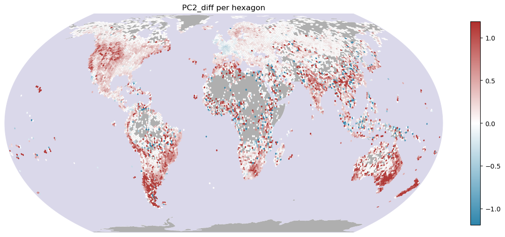
/net/home/swolf/.conda/envs/traitmaps/lib/python3.8/site-packages/cartopy/crs.py:245: ShapelyDeprecationWarning: __len__ for multi-part geometries is deprecated and will be removed in Shapely 2.0. Check the length of the `geoms` property instead to get the number of parts of a multi-part geometry.
if len(multi_line_string) > 1:
/net/home/swolf/.conda/envs/traitmaps/lib/python3.8/site-packages/cartopy/crs.py:297: ShapelyDeprecationWarning: Iteration over multi-part geometries is deprecated and will be removed in Shapely 2.0. Use the `geoms` property to access the constituent parts of a multi-part geometry.
for line in multi_line_string:
/net/home/swolf/.conda/envs/traitmaps/lib/python3.8/site-packages/cartopy/crs.py:364: ShapelyDeprecationWarning: __len__ for multi-part geometries is deprecated and will be removed in Shapely 2.0. Check the length of the `geoms` property instead to get the number of parts of a multi-part geometry.
if len(p_mline) > 0:
Results/Figures/PC3_diff_meanbased_trim01_GBIF_wcvp_CS_log10_notrim_LCweighted.png
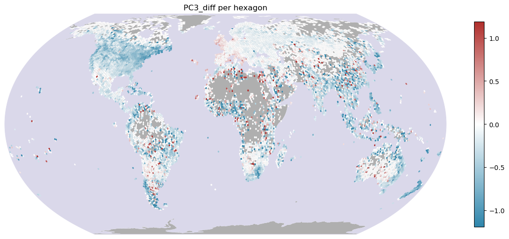
/net/home/swolf/.conda/envs/traitmaps/lib/python3.8/site-packages/cartopy/crs.py:245: ShapelyDeprecationWarning: __len__ for multi-part geometries is deprecated and will be removed in Shapely 2.0. Check the length of the `geoms` property instead to get the number of parts of a multi-part geometry.
if len(multi_line_string) > 1:
/net/home/swolf/.conda/envs/traitmaps/lib/python3.8/site-packages/cartopy/crs.py:297: ShapelyDeprecationWarning: Iteration over multi-part geometries is deprecated and will be removed in Shapely 2.0. Use the `geoms` property to access the constituent parts of a multi-part geometry.
for line in multi_line_string:
/net/home/swolf/.conda/envs/traitmaps/lib/python3.8/site-packages/cartopy/crs.py:364: ShapelyDeprecationWarning: __len__ for multi-part geometries is deprecated and will be removed in Shapely 2.0. Check the length of the `geoms` property instead to get the number of parts of a multi-part geometry.
if len(p_mline) > 0:
Results/Figures/PC4_diff_meanbased_trim01_GBIF_wcvp_CS_log10_notrim_LCweighted.png
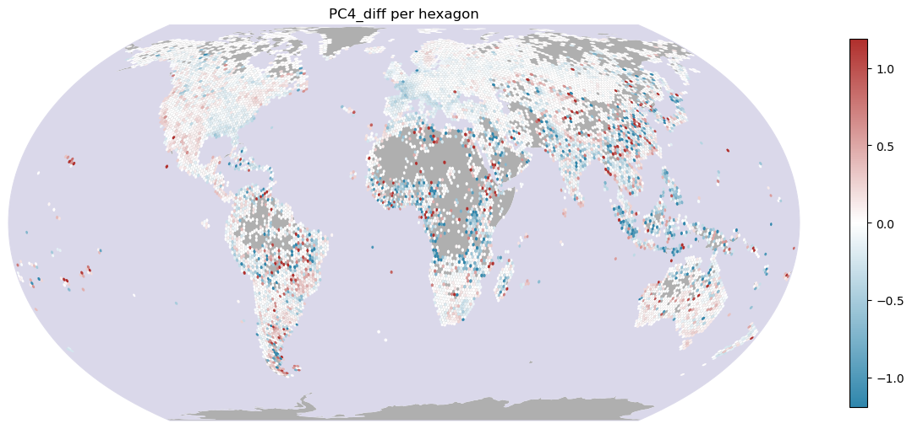
/net/home/swolf/.conda/envs/traitmaps/lib/python3.8/site-packages/cartopy/crs.py:245: ShapelyDeprecationWarning: __len__ for multi-part geometries is deprecated and will be removed in Shapely 2.0. Check the length of the `geoms` property instead to get the number of parts of a multi-part geometry.
if len(multi_line_string) > 1:
/net/home/swolf/.conda/envs/traitmaps/lib/python3.8/site-packages/cartopy/crs.py:297: ShapelyDeprecationWarning: Iteration over multi-part geometries is deprecated and will be removed in Shapely 2.0. Use the `geoms` property to access the constituent parts of a multi-part geometry.
for line in multi_line_string:
/net/home/swolf/.conda/envs/traitmaps/lib/python3.8/site-packages/cartopy/crs.py:364: ShapelyDeprecationWarning: __len__ for multi-part geometries is deprecated and will be removed in Shapely 2.0. Check the length of the `geoms` property instead to get the number of parts of a multi-part geometry.
if len(p_mline) > 0:
Results/Figures/PC5_diff_meanbased_trim01_GBIF_wcvp_CS_log10_notrim_LCweighted.png
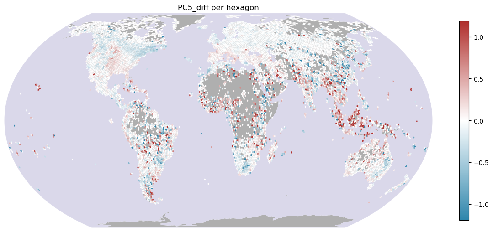